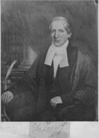

Beaubien-Perrault-Benington - Family Card
Beaubien-Perrault-Benington - Family Card
Jean-Antoine Panet(8 Jun 1751 - 17 May 1815)Pierre Casgrain(16 Jun 1771 - 17 Nov 1828)
Louise Philippe Badelard(11 Apr 1761 - 18 Mar 1830)M. Marguerite Bonenfant(11 Feb 1776 - 12 Mar 1825)
m. 14 Jul 1818, Rivière-Ouelle, Québec

b. 28 Feb 1791, Québec, Québec
d. 15 Jan 1855, Québec, Québec
br.
occ. avocat, juge
edu.
rel.
Flags. Beaubien
b. 5 Aug 1802, Rivière-Ouelle, Québec
d. 11 Jun 1870, Québec, Québec
br.
occ. philantrope
edu.
rel.
Flags. Beaubien
Children
Philippe Auguste Panet(13 Apr 1820 - 4 Feb 1821)
M. Cécile Panet(30 Dec 1822 - 8 Sep 1895)
Elisabeth Justine Rosalie Panet(13 Oct 1827 - 20 Mar 1846)
Hon. Charles Eugene Panet(27 Nov 1829 - 22 Nov 1898)
Bernard Claude Philippe Panet(18 Mar 1832 - 27 Aug 1832)
M. Luce Panet(7 Aug 1835 - 14 Oct 1844)
> Marie Alphonsine Philomène Panet(8 Nov 1839 - 29 Oct 1905)
M. Rosalie Panet(8 Jul 1846 - 19 Sep 1922)